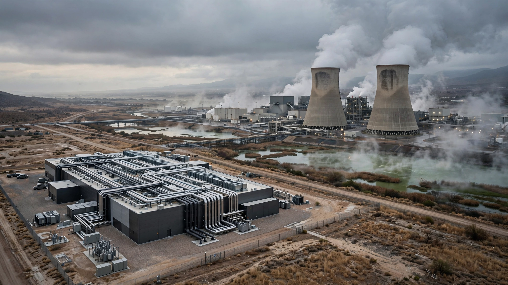

⚡ Energy · 🌍 Climate
Nvidia Says It Solved AI’s Water Problem. The Math Says It Fixed 13% to 63% of It.
A full lifecycle water audit of a 1 MW AI data center reveals the gap between “zero water cooling” and zero water. The answer depends on a metric nobody in the industry is disclosing.

The number is somewhere between 13% and 63%.
That is how much of AI’s total water footprint disappears when you swap a conventional evaporative-cooled data center for Nvidia’s new DSX reference design, the warm-water closed-loop system the company unveiled in June alongside its Rubin GPU platform. Not an error bar. A reflection of two genuinely different ways of measuring water impact, each defensible on its own terms, and nobody building, regulating, or protesting data centers is being clear about which one they mean.
Nvidia’s chief sustainability officer, Josh Parker, told Axios in June that “the water consumption challenge for data centers is largely solved.” Ali Heydari, Nvidia’s director of data center cooling and infrastructure, went further: “We have eliminated massive amounts of power usage and pretty much all water usage.” Microsoft’s VP of data center engineering, Steve Solomon, called the system “a big deal for everybody.”
Those statements are accurate within the boundary Nvidia draws around them. Inside the facility walls, DSX reduces water consumption to nearly nothing. But AI doesn’t end at the facility walls, and the water it uses doesn’t either. Electricity generation and semiconductor manufacturing both consume enormous volumes of water upstream, none of which shows up on the data center’s water bill, and to understand what Nvidia actually fixed requires a full lifecycle audit that traces every gallon from the power plant’s intake pipe to the fab’s ultrapure water system to the cooling towers that Nvidia is now replacing. We ran one.
How It Works
Not a minor tweak. DSX represents the first generation of Nvidia AI infrastructure to achieve 100% liquid cooling across every chip, switch, and networking component, with no fans anywhere in the system, a mixture of 75% water and 25% propylene glycol circulating through cold plates mounted directly on processors, absorbing heat at the source and routing it to outdoor dry cooler radiators. Coolant enters server racks at 45°C and exits at 55°C after pulling heat away from the GPUs.
That inlet temperature is the breakthrough, the thing that makes the whole system possible. Traditional liquid cooling runs coolant at around 30°C, which means the temperature gap between coolant and outdoor air is often too small for passive radiators to handle the heat load alone, so operators fall back on chillers and evaporative cooling towers, both of which consume water and electricity. At 45°C, the math flips. In most temperate and even warm climates, outdoor air is cool enough relative to the coolant to dissipate heat through radiators alone. No evaporation and no water loss. Heydari estimates dry-cooler-based cooling may need supplemental chilling during perhaps 1% of operating hours in the hottest climates.
Each degree of increase in chiller plant target temperature cuts cooling energy costs by roughly 4%, and at 45°C many operators can eliminate the chiller plant entirely, filling the coolant once and recirculating it for the life of the facility.
Lifecycle Water Audit
We built a reference scenario: one megawatt of AI compute, running 24 hours a day, 365 days a year, producing 8,760 megawatt-hours of work annually, and tracked water through three stages of the AI supply chain — on-site data center cooling, electricity generation at the power source, and semiconductor manufacturing at the fab.
Stage 1: On-Site Cooling
A conventional evaporative-cooled data center consumes approximately 420 gallons per megawatt-hour through its cooling towers, and every drop evaporates, none of it returning to the source. For our reference megawatt, that is 3.68 million gallons per year vanishing into the atmosphere. Google’s data center in Pryor, Oklahoma, self-reports consuming 1.1 billion gallons annually, with 75% of that evaporating and only 275 million gallons discharged back to the Neosho River.
Nvidia’s DSX design takes this to approximately zero, because the closed-loop system has no evaporative path, and on this metric, Nvidia’s claim is clean.
Stage 2: Electricity Generation
Thermoelectric power plants boil water into steam, spin a turbine, then cool the steam back into liquid, and that cooling process constitutes the largest single category of water withdrawal in the United States, accounting for more than 40% of total U.S. water withdrawals according to the U.S. Energy Information Administration.
Here is where the metric split matters enormously.
Withdrawal means the total volume of water pulled from a source. Natural gas combined-cycle plants withdraw 2,803 gallons per MWh, coal plants withdraw 19,185 gallons per MWh, and most of this water is returned downstream after passing through the condenser, warmer but largely intact.
Consumption means the water that never comes back, the portion that evaporates from cooling towers, escapes as drift, or is chemically altered beyond use. Natural gas combined-cycle plants consume roughly 250 gallons per MWh; coal plants consume 400 to 500.
For our 1 MW reference data center powered by natural gas combined cycle:
| Metric | Power Generation | Annual Volume (1 MW) |
|---|---|---|
| Withdrawal | 2,803 gal/MWh | 24.55 million gallons |
| Consumption | ~250 gal/MWh | 2.19 million gallons |
Wind and solar generation consume essentially zero water. That distinction will matter in a moment.
Stage 3: Chip Manufacturing
Building a GPU is fantastically water-intensive, a process where each 300 mm silicon wafer requires approximately 2,200 gallons of water, including 1,500 gallons of ultrapure water so pristine that a single bacterium would contaminate the batch, and producing 1,000 gallons of that ultrapure water demands 1,400 to 1,600 gallons of municipal tap water as feedstock. TSMC’s fabs consume more than 150,000 metric tons of water per day. When TSMC’s three Arizona fabs reach full production, they will demand an estimated 17 million gallons daily.
But this is a one-time manufacturing cost amortized across years of operation. A single GPU die takes roughly one wafer to produce when you account for yield losses and die area, and over a three-year deployment cycle operating around the clock, those 2,200 gallons work out to 0.084 gallons per GPU-hour, a rounding error compared to the thousands of gallons consumed hourly by the data center’s power source.
Putting It Together
Here is the full lifecycle water picture for our 1 MW data center under four scenarios:
| Scenario | On-Site Cooling | Power (Consumed) | Total Consumption | Nvidia’s Impact |
|---|---|---|---|---|
| Nat gas + evaporative (baseline) | 3.68M gal/yr | 2.19M gal/yr | 5.87M gal/yr | — |
| Nat gas + Nvidia DSX | ~0 | 2.19M gal/yr | 2.19M gal/yr | −63% |
| Renewable + evaporative | 3.68M gal/yr | ~0 | 3.68M gal/yr | — |
| Renewable + Nvidia DSX | ~0 | ~0 | ~0 | −100% |
On a consumption basis, Nvidia’s cooling fix eliminates 63% of the total water destroyed by a natural gas-powered AI facility, and that is a real and significant reduction that no reasonable person should dismiss.
But switch to withdrawal — the metric that measures pressure on local water sources, the one that shows up in environmental impact statements and drives regulatory decisions — and the picture changes dramatically. On-site cooling accounts for only 420 of the 3,223 gallons withdrawn per MWh, which means Nvidia’s fix eliminates 13% of total withdrawals while the power plant upstream continues sucking 2,803 gallons per MWh from the nearest river, heating it, and sending most of it back warmer.
Neither number is wrong, because they measure different things, and nobody in the industry is telling communities which one they’re reporting.
Why This Gap Matters Now
Five days before this article was written, New York became the first U.S. state to impose a moratorium on new hyperscale data centers, freezing permits for facilities drawing 50 megawatts or more, citing energy demand, water use, and community burden. Monterey Park, California, became the first U.S. city to permanently ban data centers at the ballot box in June 2026, and more than 100 local communities have enacted moratoriums while over 300 data center-related state bills were filed in the first six weeks of 2026 alone. Cancelled projects now total an estimated $85 billion, according to the Brookings Institution.
Seventy percent of Americans oppose building a data center in their area, according to a Reuters/Ipsos poll, a number so large that it rivals opposition to landfills and prisons. Against that backdrop, Nvidia’s announcement lands differently depending on how you read the fine print. For a community worried about its local river running low, DSX is genuinely transformative, because evaporative cooling towers deplete local aquifers and closed-loop systems do not. Fear that a data center would drink the town dry — which is exactly what drove Monterey Park’s ballot measure — is a fear that Nvidia’s engineering directly addresses.
But for policymakers writing environmental impact statements, or for the UN projecting global resource strain, facility-level water is only one input in a much larger equation. Power generation water sits somewhere upstream, drawn from a river the community may share, contributing to thermal pollution they will live with regardless of what happens inside the data center walls. Counting only what happens inside the building is like measuring a car’s emissions at the tailpipe while ignoring the refinery.
Strongest Case Against This Analysis
Nvidia would argue — and reasonably — that facility-level water is what operators control and what communities fight about, because the water evaporating from cooling towers comes from the nearest river while the water consumed at a power plant might be 500 miles away, on a different watershed, regulated by a different authority. For local water stress, the on-site fix is the relevant metric. Many hyperscalers are already contracting for 100% renewable power, which would zero out upstream electricity water entirely, and in that configuration Nvidia’s DSX plus a renewable PPA achieves something genuinely approaching zero lifecycle water.
Fair point, and also true: as of 2024, only 21% of global data center electricity came from renewable sources, according to the International Energy Agency, with the other 79% drawn from grids still dominated by fossil generation. When Nvidia says the water problem is “largely solved,” the word “largely” is doing an enormous amount of work.
What We Did Not Prove
Our audit uses industry averages, not facility-specific data, and individual data centers vary widely based on climate, cooling design, and local grid mix. A facility in Iceland running on geothermal power with Nvidia DSX cooling would have a genuinely near-zero lifecycle water footprint, while a facility in Arizona running on the local grid — which includes significant natural gas and some coal generation — would not, and the gap between those two scenarios spans more than an order of magnitude in lifecycle water intensity.
We also lack Nvidia’s specific power consumption figures for full Rubin-generation racks, which limits our ability to calculate precise per-GPU-hour numbers, and consumption versus withdrawal data is reported inconsistently across the power generation industry with the 250 gal/MWh consumption figure for natural gas combined-cycle being an informed estimate from EIA data while individual plants range from 150 to 350 gal/MWh depending on cooling system design.
What You Can Do
If you are a data center operator evaluating Nvidia’s DSX design, the on-site water savings are real and should be pursued. Closed-loop warm-water cooling is superior to evaporative in virtually every scenario. But pair it with a renewable power purchase agreement. The true zero-water path is DSX plus clean energy. Without it, you are shifting the water bill, not eliminating it.
If you are a policymaker writing data center regulations, demand lifecycle water disclosure. Facility-level water reporting tells you half the story at best. Require operators to report total water intensity per megawatt-hour including upstream power generation, and require them to specify whether they are reporting withdrawal or consumption. These are not the same number. Treating them as interchangeable is how communities get blindsided.
If you are a community member deciding whether to support or oppose a local data center, ask three questions: What is the cooling system? What is the power source? And which water metric are they citing? A closed-loop facility on renewable power is not the same animal as an evaporative facility on the natural gas grid. The difference between them is a factor of 50 in lifecycle water consumption.
The Bottom Line
Nvidia built something genuinely important, because the DSX reference design eliminates water evaporation at the facility level, the single largest driver of community opposition to data centers, and that is not marketing but good engineering. But calling the water problem “largely solved” while 79% of global data center power still comes from fossil fuel grids is engineering a press release, not engineering a solution. The real zero-water data center is DSX plus renewables, and everything short of that is accounting.